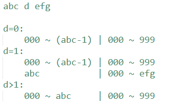

信息学竞赛刷题笔记
思维题
-
- 经过思考后，发现一个开关按2次与没按没差别。所以对于每个开关，要不就按，要不就不按。继续思考，对于一个开关，它的状态取决于它自己以及上下左右共5个开关按or不按，而且跟顺序无关。
- 接着往下想，既然与顺序无关，那我就可以从第一个开始按。假设（1，1）按了，那么... ...感觉还是不好想。
- 这时要学会给自己增加已知信息。假设我第一行开关按or不按已经知道。那么我就可以推出第二行的按法。因为当第一行按完之后，能改变第一行状态的只有第二行（不能再按第一行了，因为按两次等于没按）。所以如果（1，j）是0，那么（2，j）就要按。
- 思路就出来了，枚举第一行的按法，然后推出第二行按法，继续推出第三行按法，直至推出第五行按法。此时1-4行都是1了，最后检查第5行是否全是1即可。
-
首先很容易看出行和列是独立的问题，而且本质是一样的。所以接下来都讨论列。
然后略加思考也可以发现最终每列的数量就是全部列加起来取平均，取不了平均就没解。
假设a1, a2, ..., an平均值为avg，假设1号给2号b1个，2号给3号b2个，n号给1号bn个。则所求可表达为：\(|b_1|+|b_2|+...+|b_n|\)。且有下列方程组成立： \[ a1 - b1 + bn = avg \\ a2 - b2 + b1 = avg \\ a3 - b3 + b2 = avg \\ ... \\ an - bn + b_{n-1} = avg \]
整理可得
\[ -b_1+b_n = avg - a_1 \\ -b_2+b_n = 2avg - (a_1+a_2) \\ -b_3+b_n = 3avg - (a_1+a_2+a_3) \\ ... -b_{n-1}+b_n = (n-1)avg - (a_1+a_2+...+a_{n-1}) \]
- 继续整理
\[ b_1 = -avg + a_1 + b_n \\ b_2 = -2avg + (a_1 + a_2) + b_n \\ ... \\ b_{n-1} = -(n-1)avg + (a_1+a_2+...+a_{n-1}) \]
- 继续整理
\[ b_1 = b_n - avg + a_1 \\ b_2 = b_n - 2avg + (a_1+a_2) \\ ...\\ b_{n-1} = b_n - (n-1)avg + (a_1+a_2+...+a_{n-1}) \]
- 令x = bn，则所求为：\(|x-c1|+|x-c2|+...+|x-c_{n-1}|+|x - c_n|, c_n=0\)
- 一目了然，x取c的中位数时，所求最小。
-
- 考虑每一位能出现多少次1。

- 如上图，考虑d，如果d是0。那么当d这一位取1的话，左边只能是000 ~ (abc-1)，右边可以是000 ~ 999。上图都清晰明了了，分情况讨论即可。
-
- 枚举哪两个人是狼人，那么此时所有人的身份就确定了。然后检查两个条件。(1): 是否有且仅有两个人在说谎；(2): 俩狼人中是否有且仅有一个人在说谎。若俩条件满足则是一组解。
基础算法
位运算
- 90.
64位整数乘法 - AcWing题库
- 计算a * b % p的结果。O(1)即可得出结果，但是a和b的范围很大会爆longlong。所以要用时间换空间。考虑a * b = a * (b的二进制表示)，例如a * 5 = a * (101) = a * (4 + 0 + 1)。于是很容易的想到用logn的时间去分解b，用个中间变量sum对自己做累加（sum初始值为a），这样sum就会等于a ，然后等于2a，然后等于4a... ...。分解b的过程中如果最后一位二进制是1，就ans += sum即可。这种用加法代替乘法的方法，叫做龟速乘。
- 注意，%的优先级比+高。
- 875. 快速幂 -
AcWing题库
- 计算\(a^b % p\)的结果。思路跟龟速乘一样，都是分解b。考虑\(a^b = a^{b的二进制形式}\)，例如\(a^5 = a^{101} = a^{4 + 0 + 1} = a^4 * a^1\)。用while去分解b的二进制，用个中间变量sum对自己做累乘（sum初始值为b），如果分解过程中b的最后一位二进制是1，就ans *= sum即可。
递归/分治
- 97.
约数之和 - AcWing题库
- 求\(a^b\)的所有约数之和。不难想到分解质因数。假设数num分解为\(p_1^{k1} \cdot p_2^{k2} \cdot ... \cdot p_n^{kn}\)，那么数num的约数的个数就是(k1 + 1) * (k2 + 1) * ... * (kn + 1)（相当于每个质数是材料，可以拿0/1/2/...个）。数num的约数之和就是\((1+p_1+p_1^2+...+p_1^{k1}) \cdot (1+p_2+p_2^2+...+p_2^{k2}) \cdot ... \cdot (1+p_n+p_n^2+...+p_n^{kn})\)。
- 上面的数学推导作为一个大学生不难想出。那么这题思路就是先将a分解质因数，然后将每个质数的次数乘b。然后求\((1+p_1+p_1^2+...+p_1^{k1}) \cdot (1+p_2+p_2^2+...+p_2^{k2}) \cdot ... \cdot (1+p_n+p_n^2+...+p_n^{kn})\)即可。
- 关键\((1+p_1+p_1^2+...+p_1^{k1})\)怎么求，其实这种看起来有规律的东西都是用递归去加速，根据直觉尝试一下，假设sum = 1, mul = p1，然后while( sum += mul, mul *= mul )。第一次：sum=1+p1, mul=p12；第二次：sum=1+p1+p12+p1^3, mul = p1^4... ...你看，这不就出来了。
- 递归是俩倍俩倍去递归的，所以最后可能剩一点边角料。假设\(p_1^{cnt}\)到\(p_1^{k1}\)还没求，很简单，直接递归调用函数cal(p1, k1-cnt) * ksm(p1, cnt)
- 这题坑点较多，注意b有可能为0。注意a可能为0/1。
- 98. 分形之城 -
AcWing题库
- 一道找规律模拟题，挺恶心的。本质上就是给一个数num，找出其对应的坐标（x, y）。观察后不难发现，num会落到4个区，其中2、3区的区内坐标就等于上一个等级的对应数的坐标。1区的区内坐标等于上一个等级的对应数的坐标沿[左上到右下对角线]对称的坐标。4区的区内坐标等于上一个等级的对应数的坐标沿[右上到左下对角线]对称的坐标。
前缀和/差分
- 99. 激光炸弹 -
AcWing题库
- 简单二维前缀和
- 100. 增减序列
- AcWing题库
- 差分题。最关键的一步是要联想到看一看差分数组。做题多就有经验了，这种区间操作问题一般要想到转换为差分数组，然后区间操作问题就转为端点修改问题。
- 将a转化为差分数组b后，这题就变成了，将b2~bn全部变为0的最少次数是多少？在最少次数的前提下，b1有多少种取值方式？每一次区间操作等价于将\(b_i\)加或减1，\(b_j\)加或减1（i < j && 1 <= i <= n && 2 <= j <= n + 1）
- 然后由于贪心思想，尽可能将b2~bn中的正负数抵消掉。剩下抵消不掉的数的绝对值+1其实就是b1的不同取值个数。因为剩下不能凑对抵消的只能通过和b1或者\(b_{n+1}\)凑对来抵消。选择用b1凑对多少次，b1就有多少种取值方式。
二分
- 102.
最佳牛围栏 - AcWing题库
- 看到平均数就想到整体减平均数，假设答案是一个数，然后每个数减掉这个数，那么只要找出一段区间长度>=f的区间和>=0就可以了。只要找出这样的区间。说明答案还可以更大，如果找不出，答案就要减小。所以二分答案即可。
- 关键是如何找到“一段区间长度>=f的区间和>=0”，如果没有区间长度限制O(n)扫一遍用最大连续子段和即可。主要有区间限制，那么就多开一个数组minn[i]表示截止到0 ~ i位置中sum[i]中的最小值即可。（其实这也是最大连续子段和的另一种做法）
- 1482. 进制 -
AcWing题库
- 首先将已知进制的数转为十进制。然后枚举另一个数的进制即可。但是另一个数的进制可能非常大。而且满足进制数越大，转换后的数就越大。所以可以二分。二分右边界是多少呢？极端一点，假设第二个数是10，第一个数是target进制。那么右端点至少要到（第一个数拉满的target进制转为的十进制）才行。
- 坑点：如果当前数为tar进制，那么当前数的每一位数都要在[0, tar)中。
排序
- 113.
特殊排序 - AcWing题库
- 本质上就是裸排序题，用归并或者快排把<号换成题中的compare即可。
贪心
- 1517.
是否加满油 - AcWing题库
- 很多细节的贪心模拟题。
- 思路就是在当前加油站，在最远能行驶的距离之内找到第一个价钱比当前加油站低的加油站，然后开过去。如果找不到，就找价钱最少的，然后在当前加油站加满油开过去。如果一个加油站都找不到，就输出无解。
数学
- 1586.
连续因子 - AcWing题库
- 用分解因数的方法去枚举连续因子的开头，然后对于每个开头，看看最多能连多少个，取个max即可。
数据结构
链表
- 826.
单链表 - AcWing题库
- 其实上链表的模拟题几乎都可以用数组去做。
- 其实用数组模拟的思路很暴力，假设有N次操作，那么就实例化N个结构体对象。给每次操作分配一个node，每个node里有l, r, x。然后按照题目要求改变node的l、r即可。（l、r初始为-1，a[0]为虚拟头节点）
并查集
- 1250.
格子游戏 - AcWing题库
- 乍一看题目觉得很复杂，但实际上想到把二维转为一维就简单了。给每一个二维坐标赋予一个独一的一维坐标。每次一条边就是将两个点merge起来。如果一条边的两个点已经在一个集合里面了，说明产生了环。
- 1252.
搭配购买 - AcWing题库
- 将所有捆绑在一起的东西看作一个物品，然后01背包即可。
- 237.
程序自动分析 - AcWing题库
- 对于一组约束，将相等条件都用并查集并起来。然后依次检查不相等条件的两个点是否在同一集合中，如果在就是NO。全部检查完没问题就是YES。
- 239. 奇偶游戏
- AcWing题库
- 这题涉及到区间问题，都应该往是否可以转换成“前缀和数组和差分数组上的区间俩端点“问题这个方向思考。这题考虑前缀和数组sum，区间[l, r]有偶数个1说明sum[r]与sum[l - 1]的奇偶性相同，区间[l, r]有奇数个1说明sum[r]与sum[l - 1]的奇偶性不同。
- 看出这个后这题就好做了，二分M，每次检查前mid个条件是否满足。显然满足当且仅当是一个二分图，那么用染色法就检查前mid个条件形成的图是不是一个二分图即可。
- 这题其实我还这样想过，就是用的[程序自动分析]这题的思路：二分M，每次检查前mid个条件是否满足。检查方法使用并查集，先将前mid个条件中相同条件的俩元素并起来，再检查前mid个条件中不相同条件的俩元素是否在同一集合，在就return 0。都检查完了没问题就return 1。
- 但上面这样想是错的，因为这题是有个隐藏条件的，任意一个元素，它不是奇数，就是偶数。所以上面并查集的做法是无法做到保证只有两个集合的。例如下面这个例子：
- 通过三句红话其实可以推出这些条件无法共存（不是二分图）。但是上面的并查集做法是检查不出来的。
- 如果要用并查集的话要用这种思路：维护d[x]，表示x与父亲的奇偶性（如果俩点奇偶性相同则为0，不相同则为1）。在更新fat[x]的时候顺便更新一下d[x]，那么更新完后d[x]就成为了x与祖先的奇偶性。
- 238.
银河英雄传说 - AcWing题库
- 跟上一题一样维护d[x]，表示x到父亲的距离。也是在更新fat[x]时顺便更新一下d[x]即可，更新完后d[x]就成为了x到祖先的距离。
- 这题在merge时会用到并查集大小信息，所以还要多维护一个siz[x]。
- 1553. 用
Swap(0, i) 操作进行排序 - AcWing题库
- 很巧妙的解法，没做过很难想出来。
- 如果当前位置i上的数是x，那么x向i连一条边。最终形成的图是一个个环。最终想到达到的目的就是n个自环。考虑交换操作会对这个图产生什么影响。如果0跟不在一个环的数交换，那么两个环会合并。如果0跟在一个环的数交换，那么环会分裂成两个。贪心的想，先把所有跟0不在一个环的环合并到0这个环上，然后再一个一个元素分裂出去形成自环即可。那么用并查集维护一下就好了。
对顶堆
- 106.
动态中位数 - AcWing题库
- 将数分为较大的一部分和较小的一部分。而且保证较大一部分的数的数量在偶数时与较小一部分的数的数量相等，在奇数时较大一部分的数的数量比较小一部分数的数量大1。
- 用小根堆b维护较大的一部分，大根堆a维护较小的一部分。每次一进来一个数t，先与b.top()（也就是较大一部分中的最小的数）比较，如果比b.top()小，则把t插入a中。反之，把t插入b中。
- 然后就要保证两个堆之间的数量关系。维护一下即可。
- 1543. 栈 -
AcWing题库
- 相对于上面一题，就多了一个删除操作。
- 使用multiset，这玩意内部是自动从小到大排序的。支持插入、删除、用迭代器访问，两个堆分别用俩multiset代替就行了。
- 删除要a.erase(a.find(x))，而不是a.erase(x)，后者会把所有x全删掉。
优先/双端队列
- 1541.
世界首富 - AcWing题库
- 把每个人的信息都用结构体记录下来，然后对于每个查询，二分找到左右端点，然后对区间内的点重新sort一遍。这种做法时间过不去，因为n有1e5。极端情况每次查询都要对1e5个元素重新sort。
- 看题目年龄最多200，所以考虑以年龄作为索引。相当于每个年龄开一条链，然后把对应年龄人的信息链上去。
- 输出规定年龄区间内前m个人的信息，其实就是一个多路合并问题。用一个优先队列解决。
- （P.S. vector类型可以定义为pair/struct，写一个排序函数cmp即可。但是priority_queue里若想实现自己定义的规则，不要用pair最好用struct，而且不是写排序函数，而是写一个重载<的规则，注意规则内部大于要变小于，小于要变大于）
线段树
- 1273.
天才的记忆 - AcWing题库
- 区间查询最大值。
- 242.
一个简单的整数问题 - AcWing题库
- 区间修改，单点查询。
- 243.
一个简单的整数问题2 - AcWing题库
- 区间修改，区间查询。
- 1277.
维护序列 - AcWing题库
- 区间修改（乘法加法），区间查询。
- 假设sum' = sum * a + b，那么加一个数sum' + c = sum * a + (b + c)，相当于加法标记加了个c；乘一个数sum' * c = sum * ac + (bc)，相当于加法和乘法标记都自乘了个c。所以就这样维护俩标记即可，然后按照sum = sum * mul + add的规则去更新sum即可。
- 但如果假设sum' = (sum + a) * b，那么加一个数sum' + c = sum * b + ab + c，你看，就不好可持续性维护了。
- 这题注意build初始化时每个t[p]的mul标记都要初始化为1。
- 1275. 最大数
- AcWing题库
- 动态维护后L个数中的最大值，可以发现数组的数量是只会增加不会减少的，而且数组元素数量最多增长到2e5。所以对数组下标建一颗线段树维护区间最大值即可。单点修改 + 区间查询。
- 245.
你能回答这些问题吗 - AcWing题库
- 考虑t[p]的最大子段和sm如何转移：max(t[p1].sm, t[p2].sm, 跨过mid的最大子段和)。跨过mid的最大子段和 = t[p1]的最大后缀和 + t[p2]的最大前缀和。
- 所以t[p]需要维护最大子段和sm，最大前缀和lm，最大后缀和rm，在维护lm, rm时还会用到区间和sum。
- 查询区间[l, r]时，ask函数应返回一个Tree类型，当l <= mid <= r（mid = (t[p].l + t[p].r) / 2）时，可以通过子树t1, t2表示出状态。如果不返回Tree类型的话，就没有子树t1, t2的信息，状态不好表示出来。
- 246.
区间最大公约数 - AcWing题库
- 由更相减损术可知gcd(a, b) = gcd(a, b - a)。次公式可扩展到多个变量：gcd(a, b, c, d) = gcd(a, b - a, c - b, d - c)，这其实就是差分形式。所以可以线段树维护原数组的差分数组的区间gcd和区间和，那么操作1就是单点修改（单点修改那可以完全不用考虑懒标记问题了很舒服），操作2求gcd(A[l], A[l + 1], A[l + 2], ..., A[r]) = gcd(A[l], A[l + 1] - A[l], A[l + 2] - A[l + 1], ..., A[r] - A[r - 1]) = gcd(差分数组[1 ~ l]之和，差分数组[l + 1到r]的gcd)。
- 这题有俩小细节，第一差分单点修改r + 1有可能到n外边去，第二查询时如果l = r则要特判下。
- 247.
亚特兰蒂斯 - AcWing题库
- 扫描线算法，扫描线算法是个比较死的算法，因为其有一个特殊性质：线段是成对出现的。
- 做法两种，我喜欢这种：维护区间最小值min和区间最小值的长度minlen。这样，如果t[1].min = 0，则被覆盖的长度 = 全部长度 - t[1].minlen。如果t[1].min != 0，则被覆盖的长度 = 全部长度。区间最小值和区间最小值长度都非常好维护，区间修改就是给最小值打个懒标记即可，不用管minlen，因为最小值加一个数减一个数仍然是最小值，minlen不会变。
- 上面就是扫描线的做法。所以扫描线很简单，关键这题的细节处理有点点小麻烦。
- 一，坐标都是小数，所以需要离散化处理成整数才能建线段树。二，t[p]管理的实际区间为getVal(t[p].r + 1) - getVal(t[p].l)，因为只有这样，线段树的子节点才可以初始化minlen，不然minlen不好初始化。三，离散化的俩函数getRank, getVal的参数类型要注意。
- H-Tokitsukaze
and Power Battle (hard)_2024牛客寒假算法基础集训营2
- 是“最大区间和”的变形题。
- 考虑i，j的位置，如果i，j都在mid左边是一种情况，即t[p].ans = t[p1].ans。如果i，j都在mid右边是一种情况，即t[p].ans = t[p2].ans。如果i，j分布在mid两边，则需要考虑x(即中间砍的那一刀)的位置。
- 如果砍的一刀在mid, mid + 1之间，则t[p].ans = t[p1].包含右端点的最大后缀和 - t[p2].包含左端点的最小前缀和。
- 如果砍的一刀在左半边，则t[p].ans = t[p1].包含右端点的答案 - t[p2].包含左端点的最小前缀和。
- 如果砍的一刀在右半边，则t[p].ans = t[p1].包含右端点的最大后缀和 + t[p2].包含左端点的答案。
- 所以t[p].ans就是在上面几种情况取max。发现用到了“包含右端点的最大后缀和rmax”，“包含左端点的最小前缀和lmin”，“包含右端点的答案rans”，“包含左端点的答案lans”，rmax和lmin很好维护，现在来看lans和rans如何维护。
- 先考虑t[p].lans。此时i是卡死的就在l上，考虑j的位置。如果j左半边，则t[p].lans = t[p1].lans。如果j在右半边，则考虑砍的一刀位置，如果砍在mid, mid+1中间，则t[p].lans = t[p1].sum - t[p2].lmin；如果砍在左半边，则t[p].lans = t[p1].包含左右端点的答案 - t[p2].lmin；如果砍在右半边，则t[p].lans = t[p1].sum + t[p2].lans。
- t[p].rans同理。发现在维护这俩的时候还用到了"包含左右端点的答案lrans"。
- 现在考虑t[p].lrans。因为i，j都定死了，所以只需考虑砍的一刀的位置。如果砍在mid,mid+1中间，则t[p].lrans = t[p1].sum - t[p2].sum。如果砍在左半边，则t[p].lrans = t[p1].lrans - t[p2].sum。如果砍在右半边，则t[p].lrans = t[p1].sum + t[p2].lrans。
树状数组
- 107.
超快速排序 - AcWing题库
- 求逆序对。
- 241. 楼兰图腾
- AcWing题库
- 简单的求每个数之前比它大的数的个数。
- 244.
谜一样的牛 - AcWing题库
- 最后一头牛的高度是确定的，在确定最后一头牛高度后，倒数第二头牛的高度也确定了，依次类推。假设现在要求第i头牛的高度，则若数组c的区间和[1, k] = 比第i头牛矮的牛数量 + 1，则第i头牛的高度为k（最开始每个位置的c[i] = 1）。
- 区间和查询用树状数组，找高度时配合二分。找到该牛高度k后，upd(x, -1)。
字典树
- 835.
Trie字符串统计 - AcWing题库
- 板子题，字典树空间一般不知道开多少合适，建议用vector。就比如这题，开个vector<Node> a。Node结构体里放指向信息，这题的指向信息有26个，就在Node里开一个alpha[26]。
- 从根节点编号0出发，若a[0].alpha[k] = 0，那就新开一个点，a[0].alpha[k] = ++dex, a.push_back(tmp)即可。然后编号跳到a[0].alpha[k]，继续依次类推。
- 通过这种方法，就不需要考虑空间应该开多大了。
- 143.
最大异或对 - AcWing题库
- 思考每个数的二进制形式，将每个数的二进制形式insert到字典树中（字典树就两个指向信息p[0/1]），然后对于每个数，依次扫二进制的每一位数k，在字典树里找a[p].nxt[k ^ 1]是否存在，存在p就指向它，不存在就指向a[p].nxt[k]。在过程中统计答案求最大值即可。
- 256.
最大异或和 - AcWing题库
- 涉及到区间异或运算，所以尝试是否可以前缀和/差分转化为单点运算，发现是可以的。考虑维护前缀异或数组，s[i] = a[1] ^ a[2] ... ^ a[i]，这样a[p] ^ a[p + 1] ^ a[p + 2] ^ ... ^ a[n] = s[n] ^ s[l - 1]。所以所求为x ^ s[n] ^ s[p - 1]。(x ^ s[n])是一个定值C，所以就是在[l - 1, r - 1]内找一个数s[i]，使得s[i] ^ C最大。所以就是可持久化Trie树。
- 可持久化Trie树就是每次添加一条链，具体算法是p = root[now], q = root[now - 1]。然后p的所有子节点除了新链上的点，复制q的节点，然后p = t[p][k] = ++dex, q = t[q][k]。再递归进行直至把这条链添加进Trie树。
模拟
- 1494.
银行排队 - AcWing题库
- 还行的一道模拟题，考虑时间轴，每个人要等的时间 = 到他的时间 - 他到的时间。用一个优先队列维护正在办理业务的人，按照谁先结束排序。
- 通过这题可以学到priority_queue是可以自定义排序规则的，只需要重载<号（类型一定要是结构体不能是pair）
- 1557.
说话方式 - AcWing题库
- 坑点比较多，有可能有ab:cc/a:::bcc/a:aa:b...的情况。
- 通过这题可以学到map也是可以排序的。只需要vector<PAIR> vec(mp.begin(), mp.end())，即可把mp转换成一个vector。然后用sort对vector排序即可。
- 1486.
排队等候 - AcWing题库
- 跟“银行排队”那题比较像，这题多了一个“等待区”的概念，而且没有了具体的时间。所以不像上一题好写。所以学会自己给自己增加条件，用一个循环模拟时间线（因为17点下班所以复杂度不会很高）。然后对于当前第T秒，先把每个窗口办理完手续的人赶出去，然后再依次把人放进等待区，分配到对应的窗口。
- 这题坑点是即使一个人它开始办理业务的时间超过了17点，它也要分配到对应的窗口，因为对于他自己，是不知道前面的人需要多久的，所以他肯定会排进某个窗口的队里。
DP
背包
-
- 01背包，复杂度O(n * m)，一维倒序
-
- 完全背包，复杂度O(n * m)，一维正序
-
- 朴素多重背包，复杂度O(n * m * s)，当成01背包做
-
- 二进制优化多重背包，复杂度O(n * m * logs)
- 原理即用1、2、...、exp、s - exp凑出[1, s]总中任意一个数
-
- 单调队列优化多重背包，复杂度O(n * v_max), v_max为物品中最大的体积
- 先列出递推表达式，然后把j - v, j - 2v, ... r的表达式也一起列出来。然后画个数轴，发现是个滑动区间。
- 那么三重循环，第一枚举物品，第二枚举余数（从0到v-1），第三从r枚举到m，每次+=v，同时开始滑动。
- 更新的时候注意w的数量，假设更新f[j]用到了f[k]，那么f[k]的w的数量就是(j - k) / v * w。
-
- 多重背包是看选0个、还是1个、2个。分组背包就是看选第1个、还是第2个。第一重枚举组，第二重枚举体积，第三重枚举组内物品。
-
- 这题不是求“恰好装满某容量的方案数”，如果是求前面这个问题的话用一个计数数组跑一遍01背包即可，g[0] = 1。
- 这题是求最优选法的方案，所以计数数组含义仍然不变，g[i]表示恰好装好容量为i的方案数，把f数组含义变一下，f[i]表示恰好用容量i的包装出的最优价值。这样的话，就需要memset(f, -0x3f, sizeof f), f[0] = 0。然后跑一遍01即可。最后统计的时候在f[1 ~ m]中找出最优价值，然后再在g[1 ~ m]中统计最优价值的方案数之和。
-
- 求具体方案。用二维背包去求，先跑一遍二维01。再去逆推出方案。
- 注意因为字典序从小到大，所以做01时要倒着做，这样最后选的最后字典序最小的，逆推的时候就可以从最小的开始。
-
- 很巧的一道题。对于样例，背包体积容量169(m)，重量容量5(k)。物品个数是其约数个数n，每个物品的价值是约数的p次方，体积是约数的p次方，重量是1。按字典序大输出，即做完全背包时按约数从小到大，这样倒序找方案的时候就是从大到小。
树形dp
- 10.
有依赖的背包问题 - AcWing题库
- f(i, j)：i为根节点，容量为j时所能装出的最大方案。考虑如何划分，如果x是根节点，如果考虑x儿子节点内部的选择方式的话，方案太多，不好划分。所以考虑按照容量划分，即枚举给每个儿子节点分配多少的容量。
- 坑点1：俩重循环，第一重j从m - v[x]到0倒序，之所以倒序是因为对某儿子，容量只会分配给它一次。
- 坑点2：自己是必选的，而且只能选1次，所以要倒序枚举：
for (int i = m; i >= v[x]; i--) f[x][i] = f[x][i - v[x]] + w[x]; - 坑点3：因为自己是必选的，如果自己不选，儿子选了也没用，所以要：
for (int i = 0; i < v[x]; i++) f[x][i] = 0;
图论
最短路
- 1495.
公共自行车管理 - AcWing题库
- 题意稍长但不难懂，看完之后第一反应是多关键字最短路。但是除了距离可以在做dij时维护，“发送的自行车最小数量”和“带回车辆最小数量”是无法在dij的时候维护的。因为这两个量需要知道整段路径的信息后才可求出来，不具有最优子结构。
- 所以这题思路就是先dij，然后枚举所有最短路，找出符合条件最优的一条。
- dfs过程中维护参数sum表示从起点走到x时路上所有站点需求变化量之和，这样直到到达终点前，每一步若
sum < 0，min_carry = max(min_carry, -sum)，到达终点即可求出“发送的自行车最小数量”。“带回车辆最小数量” = sum + 发送的自行车最小数量。
树
- 1497.
树的遍历 - AcWing题库
- 经典题。给出中序和后序，后序的最后一个点肯定是root，所以在中序里找到root的位置，然后中序的左半边就是左子树，右半边就是右子树。（从而可算出左右子树节点数量）因为后序是左右根，所以后序序列的[起始, 起始 + 左子树数量 - 1]是左子树，[起始 + 左子树数量 - 1 + 1, 结束]是右子树。这样就分别在中序和后序序列中得到了左右字数，然后递归即可。
- 1527.
判断二叉搜索树 - AcWing题库
- 经典题。本质上和上一题一样，因为这题的树是二叉搜索树。而BST的中序遍历就是元素从小到大排序。所以它的中序遍历相当于已经告诉你了。然后它又告诉了你前序遍历。那么根据这俩序列，按照上一题的方法，就可以构造出树了。
- 跟上一题不同的是，这里的元素可能会重复。其实问题不大，因为题目中说“左子树上所有结点的值均小于它的根结点的值”，所以若x在中序遍历中出现多次，找最左边的即可。
- 然后这题让我们输出后序遍历，其实在构造的时候，在dfs的return前加一句ans[++dex] = root，即可得到后序遍历。
- 最后这题还有个翻转机制，翻转其实就是中序遍历reverse一下即可，然后找最左边的变成找最右边的，其余都一样。
- 1600.
完全二叉树 - AcWing题库
- 要求判断一棵树是否是完全二叉树。完全二叉树有一个很好的性质，就是可以存到一个长度为n的序列中。假设当前节点编号是x，则父节点编号为x/2，左儿子编号为x * 2，右儿子编号为x * 2 + 1，所以检测一棵树是不是完全二叉树，只需按照上述方法把树编号建到序列中。最后检查1 ~ n序列中有无空的位置即可。
- 1550.
完全二叉搜索树 - AcWing题库
- 这题很好的结合了完全二叉树和二叉搜索树的特点。前者特点是可用一个数组来存，后者特点是中序遍历为有序。所以以1作为根节点，然后用2, 2+1的方式，对树作中序遍历，然后将递增的数字填进相应的位置即可。